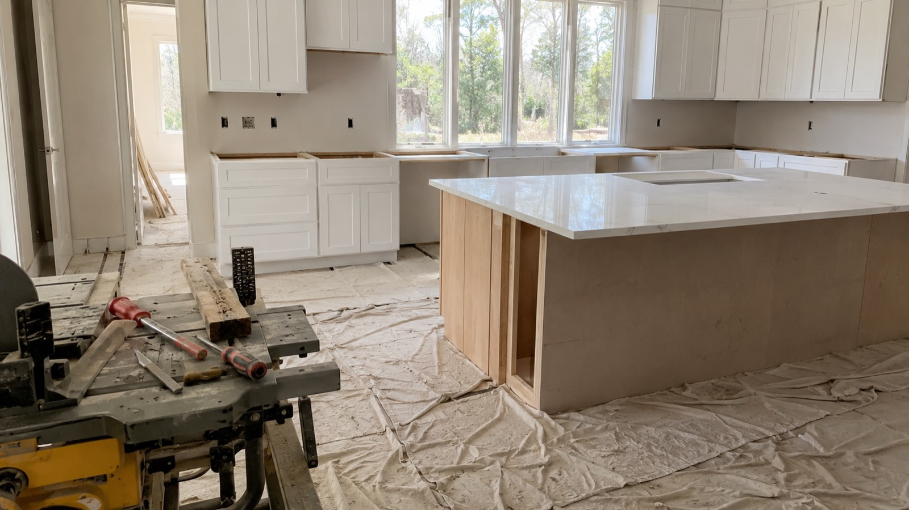

Blog · Local Guide · Published June 2026
Kitchen Remodel in Magnolia, TX: What to Expect

A kitchen remodel in Magnolia is different from one in The Woodlands or Cypress. The homes are older, the lots are bigger, the permit office is in Montgomery County, and the surprises behind the drywall are different too. Here's what an honest kitchen remodel actually looks like here — from first walkthrough to final punch list.
The three tiers (and which one you really want)
Almost every Magnolia kitchen remodel falls into one of three tiers:
- Cosmetic refresh. Same cabinets, new counters, backsplash, paint, hardware. Usually no permit. Biggest visual impact per dollar.
- Full remodel, same footprint. Cabinets out, plumbing and electrical reworked behind the walls, everything new — but the walls stay where they are. This is where most Magnolia kitchens land.
- Layout-change remodel. Walls come out, the kitchen opens up to the living area, an island gets added. A real construction project with permits and structural review.
A reputable contractor will sometimes talk you down a tier — if your cabinet boxes are solid, painted doors and new hardware deliver most of the wow factor for a fraction of a full remodel.
What drives price and timeline
Anyone who quotes you a price after a 5-minute phone call is guessing. The real drivers:
- Scope — cosmetic, full, or layout-change.
- Cabinets and counters — stock vs custom; quartz vs a rare marble slab. Each tier is a meaningful jump.
- Behind-the-walls condition — older Magnolia homes hide aging galvanized plumbing, undersized electrical, and HVAC that doesn't quite reach. Fixing these in the open is cheap; doing it after sheetrock goes back up is expensive.
- Structural changes — removing what might be a load-bearing wall means an engineer's letter, a beam, and a column. Plan for it if there's any chance.
Because every one of these can swing the number materially, we don't publish flat kitchen-remodel pricing online. Every homeowner gets a project-specific estimate after we walk the actual house.
What the work looks like, in order
- Design + selections. The longest pre-work phase. Cabinets specified, counters and tile picked, appliances ordered, fixtures chosen. We finish selections before demo because a mid-build "what do we pick?" delay costs real days.
- Permits. Cosmetic refreshes often don't need them; full and layout-change remodels usually do. Montgomery County review typically takes a few weeks — longer if you're on septic and we're touching the waste plumbing.
- Demo + rough-ins. A few days of demo, then plumbing, electrical, gas, and lighting roughed in. Rough plumbing, rough electrical, and framing all get inspected before walls close — each can add days to schedule.
- Drywall, texture, paint. Walls close, get textured (orange-peel is standard), and primed. Looks fast but it's all about how straight the corners and ceilings are.
- Cabinets, counters, tile, floor. Cabinets go in first; the stone fabricator templates the installed cabinets (no kitchen is perfectly square), then cuts and installs the slab. There's usually a 1–2 week gap. Backsplash and flooring follow.
- Finish trim + punch list. Switches, lighting, faucets, appliances installed and tested. We walk it with you, fix anything that bothers you, then a final walkthrough and the warranty clock starts.
Realistic full-remodel timeline: a couple of months from demo to walkthrough, longer with a layout change. Most of the calendar is selections, permits, and lead time on cabinets and stone — not the construction itself.
What older Magnolia homes hide
When the walls open up, a few things show up over and over:
- Undersized electrical. A 1990s 100-amp panel can't handle a modern induction range, double oven, and new circuits at once. Sometimes a panel upgrade is the right call before we add any breakers.
- Aging galvanized plumbing. If we're in the wall anyway, replacing with PEX is far cheaper than coming back later.
- Floors that aren't level. Clay soil moves slabs. The reason your old cabinets had shims behind them — worth checking before new cabinet runs go in.
- HVAC not sized for an open kitchen. Open the kitchen into the living room and the system sized for two separate rooms may not cool the combined space evenly. A Manual J check is worth doing.
Permits in Montgomery County
Most of Magnolia falls under Montgomery County's unincorporated jurisdiction, though some neighborhoods near the City of Magnolia fall under the city. Either way:
- Cosmetic refreshes usually skip the permit.
- Electrical or plumbing beyond simple fixture swaps requires the licensed sub to pull one.
- Structural changes trigger a full plan review.
- Septic systems require coordination with the county environmental health department for any waste-plumbing changes.
A real contractor pulls permits in their own (or their sub's) name and welcomes the inspections. A "contractor" who tells you permits are optional or wants you to pull them yourself is a red flag worth walking away from.
How to compare bids the right way
The most common Magnolia homeowner mistake is comparing kitchen bids by bottom-line number. Two contractors can quote "the same" remodel and the cheaper one is leaving out cabinet underlights, has skipped the under-sink waterproofing, has no allowance for unforeseen electrical, and is using a builder-grade faucet you thought you were upgrading. Those gaps surface as change orders three months in.
Insist on line-item estimates. A proper kitchen bid breaks out demolition, each trade, materials by category (with explicit allowances for what you'll select), permit costs, and the GC's overhead. If you can't read a bid line by line, you can't compare it to anything. The full vetting playbook is in How to Choose a Contractor in Greater Houston.
Ready to talk about your kitchen?
Veritas Builders is based here in Magnolia and we do kitchen remodels across Magnolia, The Woodlands, Conroe, Cypress, Tomball, and the rest of Greater Houston. Walkthroughs are free, estimates are written and itemized, and we don't ask for cash.